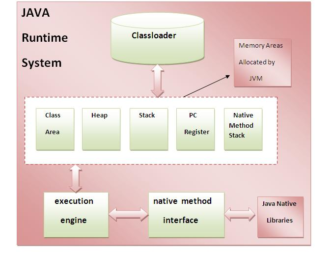

|
|
☰ 目录
06 Java虚拟机内部体系结构JVM(Java虚拟机)是一个抽象机器。 它是一个提供可以执行Java字节码的运行时环境的规范。JVM可用于许多硬件和软件平台(即JVM是平台相关的)。 什么是JVM？JVM(Java虚拟机)是：
JVM(Java虚拟机)能做什么？JVM执行以下操作：
JVM提供了以下定义：
JVM(Java虚拟机)内部体系结构下面让我们来了解JVM的内部架构。它包含类加载器，内存区域，执行引擎等。  1)类加载器
2)类(方法)区域 类(方法)区域存储每个类结构，例如运行时常量池，字段和方法数据，方法的代码。 3)堆 它是分配对象的运行时数据区。 4)堆栈 Java堆栈存储帧。它保存局部变量和部分结果，并在方法调用和返回中起作用。 每个线程都有一个私有JVM堆栈，同时创建线程。每次调用方法时都会创建一个新的框架。 框架在其方法调用完成时被销毁。 5)程序计数器寄存器 PC(程序计数器)寄存器。 它包含当前正在执行的Java虚拟机指令的地址。 6)本地方法堆栈 它包含应用程序中使用的所有本地方法。 7)执行引擎 执行引擎包含：
|